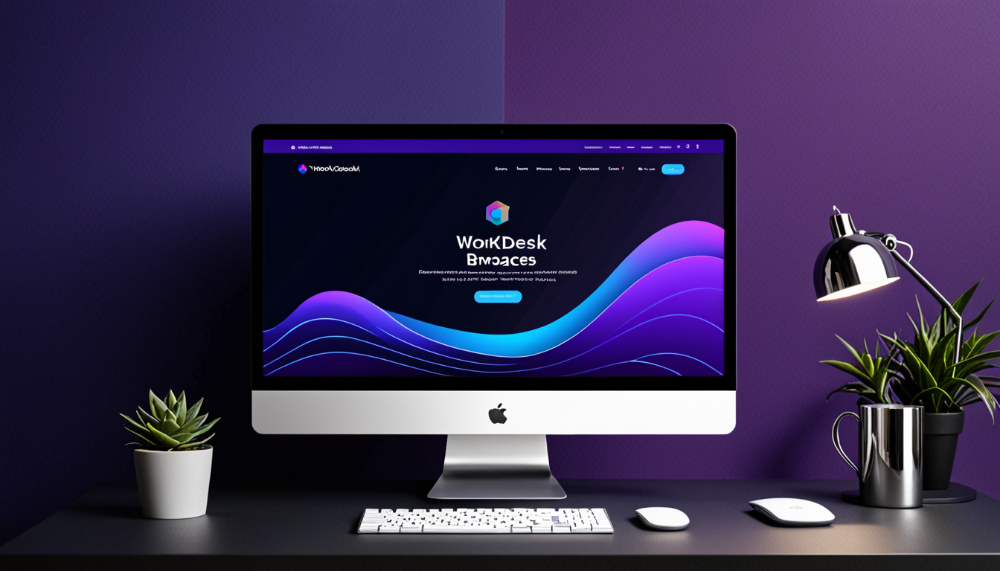

The Best Chrome Extension for Managing Browser Workspaces: Stop Losing Your Digital Context
If you regularly have more than ten tabs open, you know the pain. You are deep into research for a project, you switch to a different task, and when you come back, your carefully curated set of tabs is gone. You either closed them accidentally, or you simply forgot which ones you needed.
This is not a minor inconvenience. It is a productivity leak that costs you time, focus, and mental energy. The solution is a browser workspace manager—a tool that lets you save and restore entire groups of tabs. And if you are looking for the best Chrome extension for managing browser workspaces, you need something that is fast, private, and works without bloat.
In this post, I will explain why workspace management matters, how to choose the right tool, and how to use one effectively. I will also mention a specific extension that does this well—WorkDesk—but the focus is on giving you real, actionable advice.
Why Your Current Tab Management Strategy Is Failing
Most people rely on bookmarks or browser history to manage tabs. These methods are flawed.
- Bookmarks are permanent. You save a page, but you lose the context of why it was open alongside other pages. You end up with a messy bookmark folder that you never revisit.
- Browser history is a firehose. Finding the exact set of tabs you had open for a specific project requires scrolling through hundreds of entries.
- Tab grouping (built into Chrome) helps visually, but it does not save your session. If you close the window, the groups are gone.
The result? You waste time recreating your work environment every time you switch projects. Researchers lose threads. Developers lose debugging contexts. Content creators lose inspiration.
The Real Cost of Tab Chaos
Think about a typical day. You start researching a topic for a client report. You open ten tabs: competitor pages, industry stats, a few blog posts. Then you get a Slack message about a bug. You switch to that task, opening five new tabs for debugging. Later, you need to check your social media schedule—three more tabs.
By the end of the day, you have twenty-five tabs open. Your browser is slow. Your brain is slower. You close everything in frustration, and tomorrow you start from scratch.
A Chrome tab manager solves this by letting you save the entire workspace as a named snapshot. You can close everything, switch to a different workspace, and restore the original one later—exactly as you left it.
What Makes a Great Browser Workspace Manager?
Not all tab management extensions are created equal. Some are bloated with features you do not need. Others are slow or sell your data. Here is what to look for in a workspace extension Chrome user can trust.
1. Speed and Lightweight Design
The extension should not slow down your browser. Some tab managers load a heavy UI that takes seconds to open. That defeats the purpose. Look for one that runs in the background and activates instantly.
2. Privacy
You are storing information about every page you visit. A good browser workspace manager should work entirely locally. No cloud sync means no one else sees your data. If you are a researcher working on sensitive topics or a developer with proprietary code open, this is non-negotiable.
3. Simple Save and Restore
The core action should be one click. Save workspace. Name it. Close tabs. Later, click restore. That is it. If you need to navigate a complex menu to save a session, you will stop using it.
4. No Duplicate Bloat
Some extensions try to be everything: password manager, note-taker, screenshot tool. You do not need that. You need a dedicated tab organizer extension that does one thing well.
How to Use a Workspace Manager Effectively (Practical Tips)
Having the right tool is only half the battle. You also need a system. Here are three practical workflows that will make a workspace manager genuinely useful.
Use Workspaces for Research Sprints
If you are a researcher or student, you often dive deep into a single topic. Instead of keeping all tabs open, save each research session as a workspace.
- Workflow: Open tabs related to Topic A. Save workspace as "Topic A - Research". Close all tabs. Open tabs for Topic B. Save as "Topic B - Research". Switch between them as needed.
- Benefit: You never lose the thread. You can pick up exactly where you left off, even days later.
Separate Work and Personal Context
Many professionals mix work and personal browsing in the same Chrome profile. This is messy. Use workspaces to create clean separation.
- Workflow: Have a workspace for "Client X Project", another for "Internal Meetings", and one for "Personal Reading". When you are done with work, save the work workspaces and restore your personal one.
- Benefit: You mentally disconnect from work when you close those tabs. The workspace manager handles the switching.
Manage Complex Development Projects
Developers often have multiple projects running simultaneously. Each project might have a local server, a GitHub repo, a documentation page, and a staging environment.
- Workflow: Save each project as a workspace. When you switch to a different feature or bug fix, restore that project's workspace.
- Benefit: No more searching through your history for that specific API doc you had open. It is right there, in the saved session.
Common Mistakes to Avoid
Even with a good Chrome extension for managing browser workspaces, you can fall into bad habits. Here is what to watch out for.
Saving Too Many Workspaces
Workspaces are useful, but they are not a filing system. Do not save every random collection of tabs. Save only workspaces that represent a coherent task or project. If you save ten workspaces a day, you will end up with a cluttered list that is hard to navigate.
Not Naming Workspaces Clearly
Vague names like "stuff" or "work" are useless. Use descriptive names: "Q3 Marketing Report Research", "Bug #1234 Debugging", "Vacation Planning - Italy". You should know what is inside without opening it.
Forgetting to Save Before Closing
The biggest mistake is closing a window without saving the workspace first. Make it a habit: before you close a group of tabs, save them. Even if you think you are done, save them. You might need them later.
Why WorkDesk Fits the Bill
I mentioned earlier that I would talk about a specific tool. WorkDesk is a browser workspace manager for Chrome that checks all the boxes above. It is lightweight, fast, and private. It saves and restores workspaces with one click. It does not try to be anything else.
If you are tired of tab chaos and want a clean, reliable way to manage your browser sessions, WorkDesk is worth a look. It is designed for the exact scenarios I described: researchers, developers, professionals, and anyone who juggles multiple contexts.
But the real value comes from using it consistently. The tool is simple. The habit is powerful.
Conclusion: Take Control of Your Browser Workspaces
Managing tabs is not a trivial problem. It affects your focus, your productivity, and your mental clarity. A dedicated workspace extension Chrome user can rely on to save and restore sessions is a small investment that pays off every single day.
Stop relying on bookmarks and history. Start using a real workspace manager. Save your research sessions. Switch between projects instantly. Never lose your context again.
If you want to try a tool that does this well, check out WorkDesk. It is free to start, and it will change how you browse.
Action step: Open your browser right now. Look at the tabs you have open. Are they all related to one task? If not, save them as separate workspaces. You will feel the difference immediately.